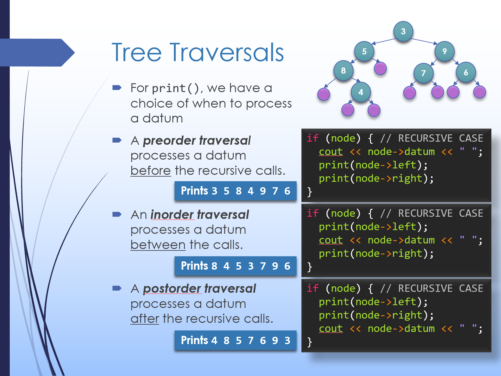

Recursion is well-suited for problems that have an intrinsic recursive structure. This also applies directly for many data structures, including linked lists (which we've seen before) and trees (which we introduce today). It will also turn out that for some operations, a recursive approach is natural while an iterative approach requires significant additional work.
Before we get started, I want to share with all of you some thoughts on recent changes to U of M programs and policies. Below is a brief video from a lecture near the end of the Winter 2025 term. The content is still relevant, and I hope may take a moment to reflect and consider your own values and perspective.
|
1: Recursion on Linked Lists
1.1
1.2
As an initial example, let's consider the recursive structure implicit in a linked list as well as strategies for recursively processing the data stored in the list.
1.1 Exercise: Recursive List Functions
You're welcome to check your solution with this walkthrough video.
1.2 Exercise: Coding
list_max()
Implement the Sample solution… |
|
2: Recursion on Trees
2.1
2.2
Now, let's take a look at a new data structure, the binary tree. It turns out that binary trees underly many of the most efficient implementations of a variety of data structures, including sets and maps, which we'll talk about next time. Because trees are also a naturally recursive data structure, we'll apply recursion here as well.
2.1 Exercise: Recursive Tree Functions
You're welcome to check your solution with this walkthrough video.
2.2 Exercise: Coding
tree_height()
Implement the Sample solution… |
|
3: Tree Traversals
To traverse and process each element in the tree, there are several possible orderings. (Contrast this to a linear data structure like a linked list where there is only one straightforward traversal.) Let's take a look at each: Here's a copy of the slide with all the traversals:

|
|
4: Types of Recursion
4.1
4.2
4.3
Finally, let's take a look at several qualitatively different kinds of recursion we've seen so far. Generally, the distinguishing factors are the number and placement of the recursive calls.
4.1
Consider this function. What kind of recursion does it use?
4.2
Consider this function. What kind of recursion does it use?
4.3
Consider this function. What kind of recursion does it use? |